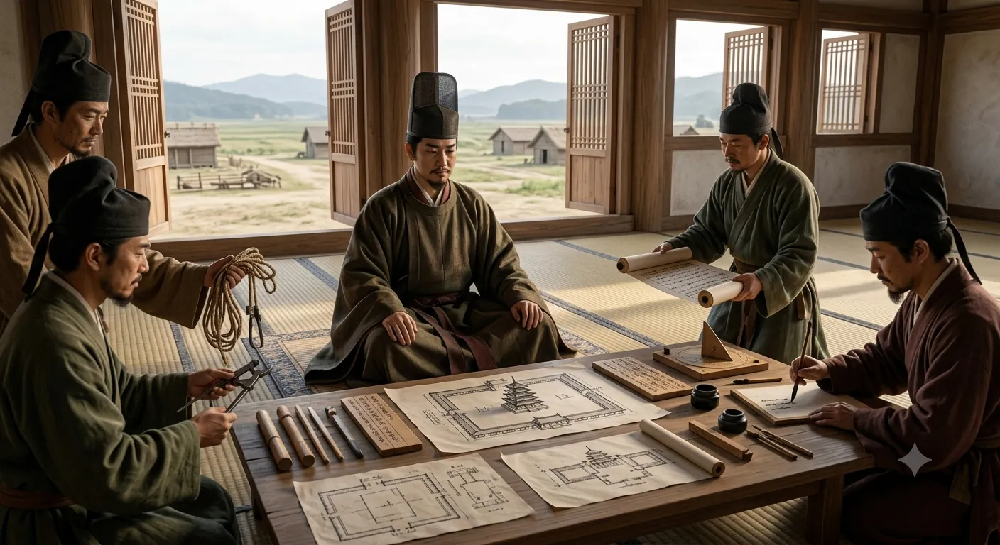

蘇我氏は、朝鮮半島の諸国との外交や渡来系氏族との関係を背景に、仏教の受容や大陸の文物・制度の導入に深く関わりました。
聖徳太子は、蘇我氏と結びついた王族として、仏教受容をめぐる政治的対立のなかで重要な役割を担いました。仏教への支持は、宗教的であると同時に政治的でもありました。日本をより広い東アジア世界へつなぐ方法だったのです。
難波津に近い上町台地に大規模な寺院を建立したことは、難波が大陸との交流を担う重要な場所だったこととも無関係ではありません。四天王寺は、仏教・王権・外交・交通が交差する場所として発展していきました。

聖徳太子が四天王寺を計画する様子（想像図）。